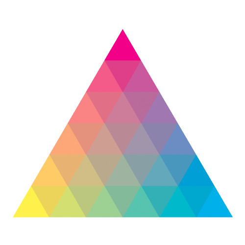

```{mermaid}
flowchart LR
A[Hard edge] --> B(Round edge)
B --> C{Decision}
C --> D[Result one]
C --> E[Result two]
```flowchart LR
A[Hard edge] --> B(Round edge)
B --> C{Decision}
C --> D[Result one]
C --> E[Result two]
WILL DELETE this – for own self learning all the quarto functions
This is a template repo to set up Quarto websites. The main purpose is to quickly set up repos for new websites with consistent style. It also comes with integrated github actions to render the website automatically once content is added.
To learn more about Quarto websites visit https://quarto.org/docs/websites.
Quarto is based on Pandoc and uses its variation of markdown as its underlying document syntax. Pandoc markdown is an extended and slightly revised version of John Gruber’s Markdown syntax.
Markdown is a plain text format that is designed to be easy to write, and, even more importantly, easy to read:
A Markdown-formatted document should be publishable as-is, as plain text, without looking like it’s been marked up with tags or formatting instructions. – John Gruber
This document provides examples of the most commonly used markdown syntax. See the full documentation of Pandoc’s Markdown for more in-depth documentation.
| Markdown Syntax | Output |
|---|---|
| italics, bold, bold italics | |
| superscript2 / subscript2 | |
verbatim code |
| Markdown Syntax | Output |
|---|---|
Header 1 |
|
Header 2 |
|
Header 3 |
|
Header 4 |
|
Header 5 |
|
Header 6 |

[Caption](/images/logo.png ” contour-lines”){fig-alt=“A line drawing of contour-lines.”}
| Markdown Syntax | Output |
|---|---|
|
|
|
|
|
|
continues after
|
|
|
|
|
Note that unlike other Markdown renderers (notably Jupyter and GitHub), lists in Quarto require an entire blank line above the list. Otherwise the list will not be rendered in list form, rather it will all appear as normal text along a single line.
| Right | Left | Default | Center |
|---|---|---|---|
| 12 | 12 | 12 | 12 |
| 123 | 123 | 123 | 123 |
| 1 | 1 | 1 | 1 |
Learn more in the article on Tables.
Use ``` to delimit blocks of source code:
Add a language to syntax highlight code blocks:
Pandoc supports syntax highlighting for over 140 different languages. If your language is not supported then you can use the default language to get a similar visual treatment:
If you are creating HTML output there is a wide variety of options available for code block output. See the article on HTML Code for additional details.
Use $ delimiters for inline math and $$ delimiters for display math. For example:
| Markdown Syntax | Output |
|---|---|
| inline math: \(E=mc^{2}\) | |
display math: \[E = mc^{2}\] |
If you want to define custom TeX macros, include them within $$ delimiters enclosed in a .hidden block. For example:
For HTML math processed using MathJax (the default) you can use the \def, \newcommand, \renewcommand, \newenvironment, \renewenvironment, and \let commands to create your own macros and environments.
Quarto has native support for embedding Mermaid and Graphviz diagrams. This enables you to create flowcharts, sequence diagrams, state diagrams, Gantt charts, and more using a plain text syntax inspired by markdown.
For example, here we embed a flowchart created using Mermaid:
```{mermaid}
flowchart LR
A[Hard edge] --> B(Round edge)
B --> C{Decision}
C --> D[Result one]
C --> E[Result two]
```flowchart LR
A[Hard edge] --> B(Round edge)
B --> C{Decision}
C --> D[Result one]
C --> E[Result two]
Learn more in the article on Diagrams.
You can include videos in documents using the {{< video >}} shortcode. For example, here we embed a YouTube video:
Videos can refer to video files (e.g. MPEG) or can be links to videos published on YouTube, Vimeo, or Brightcove. Learn more in the article on Videos.
You can add classes, attributes, and other identifiers to regions of content using Divs and Spans (you’ll see an example of this below in Callout Blocks).
For example, here we add the “border” class to a region of content using a div (:::):
Once rendered to HTML, Quarto will translate the markdown into:
Divs start with a fence containing at least three consecutive colons plus some attributes. The attributes may optionally be followed by another string of consecutive colons. The Div ends with another line containing a string of at least three consecutive colons. The Div should be separated by blank lines from preceding and following blocks. Divs may also be nested. For example
Once rendered to HTML, Quarto will translate the markdown into:
<div id="special" class="sidebar">
<div class="warning">
<p>Here is a warning.</p>
</div>
<p>More content.</p>
</div>Fences without attributes are always closing fences. Unlike with fenced code blocks, the number of colons in the closing fence need not match the number in the opening fence. However, it can be helpful for visual clarity to use fences of different lengths to distinguish nested divs from their parents.
A bracketed sequence of inlines, as one would use to begin a link, will be treated as a Span with attributes if it is followed immediately by attributes:
Once rendered to HTML, Quarto will translate the markdown into:
Typically, you’ll use CSS and/or a Filter along with Divs and Spans to provide styling or other behavior within rendered documents.
Both divs and spans in Pandoc can have any combination of identifiers, classes, and (potentially many) key-value attributes. In order for these to be recognized by Pandoc, they have to be provided in a specific order: identifiers, classes, and then key-value attributes. Any of these can be omitted, but must follow that order if they are provided. For example, the following is valid:
However, the following will not be recognized by Pandoc:
This ordering restriction applies to both divs and spans. See Pandoc’s documentation on Divs and Spans for additional details.
Note that there are five types of callouts, including note, tip, warning, caution, and important.
Note that there are five types of callouts, including note, tip, warning, caution, and important.
Note that there are five types of callouts, including note, tip, warning, caution, and important.
Note that there are five types of callouts, including note, tip, warning, caution, and important.
Note that there are five types of callouts, including note, tip, warning, caution, and important.
Learn more in the article on Callout Blocks.
| Markdown Syntax | Output |
|---|---|
|
|
Div |
|
Line Block |
| Markdown Syntax | Output |
|---|---|
| endash: – | |
| emdash: — |